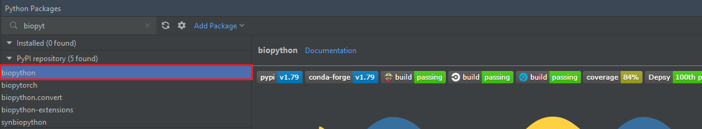
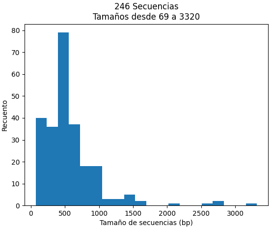
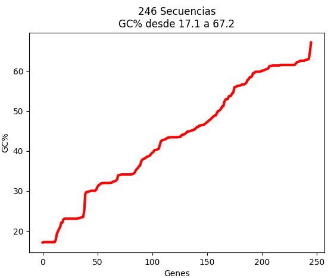

BioPython
¿Qué es Biopython?
Biopython es el paquete de Python más utilizado en el ámbito de la biología computacional, con una gran cantidad de herramientas útiles en bioinformática.
Esta librería fue creada en el año 1999 por Brad Chapman y Jeff Chang, y actualmente está soportada por el Proyecto Biopython, una asociación de desarrolladores de herramientas en el lenguaje informático Python.
Ventajas
- Compatibilidad con diferentes formatos. Biopython permite el tratamiento de archivos en diversos formatos utilizados en el ámbito biológico, presentando total compatibilidad con los archivos procedentes de GenBank, PDB, PubMed, ExPASy,...
- Tratamiento de secuencias. Permite trabajar con secuencias tanto nucleotídicas como aminoacídicas.
- Herramientas incorporadas. Herramientas para realizar operaciones comunes en secuencias, como traducción, transcripción, longitud de cadenas...
- Herramientas para realizar alineamientos de secuencias.
- Amplio uso. Al ser el paquete más utilizado en biología computacional junto a Bioconductor, encontrará una gran cantidad de foros actualizados que le serán de ayuda. Además se incluyen herramientas nuevas que le pueden ser de utilidad, así como actualizaciones de las herramientas anteriores.
Como bioquímico interesado en la bioinformática, es fundamental que se familiarice con Biopython, ya que es una herramienta fundamental actualmente en el lenguaje Python para el tratamiento de datos biológicos.
Instalación
En primer lugar debe instalar el paquete biopython. Para ello, como se explicó en el apartado PyCharm, vaya a la ventana de Python Packages e instálelo.

Otra opción sería utilizar el siguiente comando en la consola:
Trabajo con secuencias
Sin duda los elementos u objetos centrales en el tratamiento de datos biológicos son las secuencias.
En este apartado aprenderá algunos conceptos básicos sobre el maneja del objeto Seq, objeto más utilizado en el paquete Biopython, que contiene muchas funciones en común con las cadenas.
Ejemplos
Transcripción y traducción
En primer lugar veamos cómo realizar una transcripción en Biopython. Para esto crearemos objetos Seq para la hebra de ADN codificante y la hebra molde/template:
La tabla de traducción que utiliza Biopython se basa en la tablas indicadas en el NCBI, utilizando de forma predeterminada el código genético estándar (Tabla 1). En algunos casos necesitará utilizar tablas de traducción diferente, por ejemplo si está tratando con un genoma mitocondrial. Esto se puede indicar de diversas formas:
Trabajo con archivos
Para trabajar con distintos formatos de archivos de secuencias, el módulo más utilizado en BioPython es Bio.seqIO.
Para poder aprender a trabajar con archivos, necesitaremos uno que se desee analizar. Tenga en cuenta las características de su ordenador, ya que si utiliza un archivo FASTA demasiado pesado este proceso puede llegar a ser muy lento o incluso interminable.
En este caso se propone como ejemplo un archivo FASTA que contiene todas las entradas resultantes de una búsqueda en la base de datos nucleotide de NCBI.
La búsqueda elegida es de Viola tricolor (denominada comúnmente pensamiento), y puede descargarse el archivo en el siguiente enlace.

Lectura de archivos de secuencia
Para leer archivos de secuencia la función más utilizada es Bio.SeqIO.parse(). Esta función, utilizada normalmente en un bucle for, necesita dos argumentos:
- Nombre del fichero que se desea leer.
- Indicador del tipo de archivo que se desea leer, en letras minúsculas.
HM590365.1
HM590365.1 Viola tricolor voucher personal collection:I. Hiiesalu 74 tRNA-Leu (trnL) gene, partial sequence; chloroplast
Seq('GACTTAATTGGATTGAGCCTTGGTATGGAAACTTACTAAGTGGATAACTTTCAA...GAG')
506
JZ084087.1
JZ084087.1 MHV6 MHV-Cold stress-Viola library Viola tricolor cDNA clone MHV6, mRNA sequence
Seq('AACAGACAGTTGTATGCTGCGTTCGGGAGGATGAATCCCTCCCGANAAGGAATC...CTT')
177
...
...
MG009035.1
MG009035.1 Crithmum maritimum clone CM_04 microsatellite sequence
Seq('AAAACATTCATCTCCTGCACTCTTAAAATTCTTCTATTCTTTTCAATCCAATCT...TCA')
174
MG009034.1
MG009034.1 Crithmum maritimum clone CM_03 microsatellite sequence
Seq('GCTTACTTAGTTGAGATCCAGTGTTTAGATTGTACATCACTTTCTTGGAGGTTC...GGA')
144
Lectura de otros formatos de archivo
Si en lugar de leer un archivo en formato .fasta, desea leer cualquier otro archivo únicamente tiene que cambiar el valor del segundo argumento.
Por ejemplo, si desea leer un archivo .gbk (procedente de GenBank): "fasta" -> "genbank".
En el siguiente enlace puede encontrar una tabla con todas las opciones.
En muchos casos trabajará con archivos gzip, muy utilizados por herramientas bioinformáticas. Puede informarse sobre el módulo gzip, aunque es tan simple como utilizar gzip.open().
Aunque esta opción de lectura le puede ser útil, en muchas ocasiones deseará trabajar con cada lectura de forma individual. Para ello tiene que trabajar con este archivo como si fuera un objeto más, como se muestra a continuación:
LA PRIMERA ENTRADA:
HM590365.1
HM590365.1 Viola tricolor voucher personal collection:I. Hiiesalu 74 tRNA-Leu (trnL) gene, partial sequence; chloroplast
506
LA SEGUNDA ENTRADA:
JZ084087.1
JZ084087.1 MHV6 MHV-Cold stress-Viola library Viola tricolor cDNA clone MHV6, mRNA sequence
177
Extracción y escritura de datos
El archivo FASTA utilizado de ejemplo empieza de la siguiente forma:
>HM590365.1 Viola tricolor voucher personal collection:I. Hiiesalu 74 tRNA-Leu (trnL) gene, partial sequence; chloroplast
GACTTAATTGGATTGAGCCTTGGTATGGAAACTTACTAAGTGGATAA....
....
Lectura de otros formatos de archivo
Le recomendamos que pruebe este método con archivos de EMBL o GenBank.
La modificación de datos en el archivo es muy simple. Veamos como modificar por ejemplo el ID de la primera entrada:
Graficación
En este apartado se muestran algunos ejemplos de gráficas utilizando la librería matplotlib junto al módulo Bio.SeqIO. Para ello se va a utilizar de nuevo el archivo viola_tricolor.fasta.
HISTOGRAMA
Veamos cómo realizar un histograma que compare las longitudes de las secuencias en un rango de tamaños. En primer lugar, necesitamos almacenar en una lista la longitud de todas las secuencias:

FIGURA DE LÍNEAS
Para mostrar un ejemplo de un gráfico de líneas, la mejor opción es representar una de las gráficas que más utilizará: representación GC%.
En primer lugar necesitamos una lista con los porcentajes GC de las secuencias, utilizando el módulo GC empleado al principio de esta página. Vamos a realizar una representación ordenada de menores a mayores valores de GC%, para observar la variación.
Una vez obtenida la lista, representamos:

Blast
Blast (Basic Local Alignment Search Tool) es una herramienta informática de alineamiento de secuencias local, tanto de ácidos nucleicos como de secuencias proteicas.
- Blastn. Nucleótido > nucleótido.
- Blastp. Proteína > proteína.
- Tblastn. Proteína > secuencia nucleotídica traducida.
- Blastx. Secuencia nucleotídica traducida > proteína.
Esta herramienta, sin duda una de las más importantes en bioinformática, está disponible desde Biopython con el módulo Bio.blast.NCBIWWW.
La función qblast() en el módulo Bio.blast.NCBIWWW necesita tres argumentos:
- Primer argumento. Programa blast que usará: blastn, blastp...
- Segundo argumento. Base de datos en la que basará la búsqueda. Ej. Nucleotide database (nt).
- Tercer argumento. Una cadena que contenga tu secuencia de entrada (query sequence). Si la secuencia la tiene en un archivo FASTA, simplemente almacénela como una cadena.
Aunque estos son los argumentos principales y necesarios para su funcionamiento, qblast() tiene muchos más argumentos y parámetros disponibles para modificar. Al igual que con todas las funciones, puede informarse en:
Ejemplo práctico
En primer lugar descárguese un archivo FASTA en su directorio de trabajo. Le proponemos como ejemplo el siguiente archivo NAC_solanum_arabidopsis, la secuencia codificante del gen NAC de Solanum lycopersicum y de Arabidopsis thaliana.
Importe el módulo NCBIWWW y asigne la secuencia FASTA a una variable.
>>> archivo_fasta
>NC_015441.3:2856617-2858593 Solanum lycopersicum cultivar Heinz 1706 chromosome 4, SL3.0, whole genome shotgun sequence
GTCAAAGAAACTGAAACTAACACAAAGCAGGAGCAGGAGCAGCAACAAACAGAGAGAAGAAAACAGAGGA
AGATAAGAGGAAAATTTATCGAATTCGAATCGAGAGAAAAGGGGAAGTGAA ....
>NC_003070.9:c11867154-11865229 Arabidopsis thaliana chromosome 1 sequence
GTCAAAGAAACTGAAACTAACACAAAGCAGGAGCAGGAGCAGCAACAAACAGAGAGAAGAAAACAGAGGAAGATA
GAGTCCTACCACCATTATAAATTATCTCATCGTTTGCTTTCTTTTTTTTAA ....
Utilice la función qblast() con los parámetros indicados anteriormente, como a continuación:
****Alineamiento****
Secuencia: gi|1273855477|gb|CP023760.1| Solanum lycopersicum cultivar I-3 chromosome 4
Tamaño: 66477049
e-value: 0.0
GTCAAAGAAACTGAAACTAACACAAAGCAGGAGCAGGAGCAGCAACAAACAGAGAGAAGAAAACAGAGGAAGATA...
|||||||||||||||||||||||||||||||||||||||||||||||||||||||||||||||||||||||||||...
GTCAAAGAAACTGAAACTAACACAAAGCAGGAGCAGGAGCAGCAACAAACAGAGAGAAGAAAACAGAGGAAGATA...
****Alineamiento****
Secuencia: gi|1273855477|gb|CP023760.1| Solanum lycopersicum cultivar I-3 chromosome 4
Tamaño: 66477049
e-value: 1.44242e-12
GGTGAAAAAGAGTGGTATTTTTTCTCACCAAGGGATAGAAAATATCCGAACGGTTCACGGCCGAACCGAGCAGCA...
|| |||||||| |||||||| ||| | ||| | |||||||||||||| || ||| |||| || | ||||| ...
GGAGAAAAAGAATGGTATTTCTTCACCCCACGTGATAGAAAATATCCAAATGGTGTTAGGCCAAATAGGGCAGCT...
****Alineamiento****
Secuencia: gi|1273855477|gb|CP023760.1| Solanum lycopersicum cultivar I-3 chromosome 4
Tamaño: 66477049
e-value: 4.71528e-06
AACACAACTTCAAATCTCAAAAA-TCACAATTTCAAAAACTCATAGATTTCAACT------TCTATATTCAAACA...
|| ||||| ||||| | ||||| || ||| |||||||||||| || |||||||| ||||| |||||||...
AAAACAACATCAAAGTTAAAAAAATCGCAACTTCAAAAACTCAAAG-TTTCAACTTCGAAATCTATGATCAAACA...
...
Búsqueda en bases de datos: PubMed y Medline
Desde Python es posible realizar búsquedas y obtener información de muchas de las principales fuentes de datos en el ámbito bioquímico, como Pubmed y Medline.
Veamos cómo realizar una consulta en PubMed, en este caso se quiere consultar todos los artículos relacionados con Thermus aquaticus, una bacteria termófila. Para esto utilizaremos el módulo Bio.Entrez, un sistema que da acceso a todas las bases del NCBI.
Lo primero que queremos conocer es el número de artículos que están relacionados con esta bacteria.
Titulo: A Novel Trehalose Synthase for the Production of Trehalose and Trehalulose.
Autores: ['Agarwal N', 'Singh SP']
Fuente: Microbiol Spectr. 2021 Dec 22;9(3):e0133321. doi: 10.1128/Spectrum.01333-21. Epub 2021 Nov 24.
Titulo: Enhancing Cohort PASA Efficiency from Lessons Assimilated by Mutant Genotyping in C. elegans.
Autores: ['Pandey A', 'Bhat B', 'Aggarwal ML', 'Pandey GK']
Fuente: Methods Mol Biol. 2022;2392:17-33. doi: 10.1007/978-1-0716-1799-1_2.
...
Titulo: Purification, crystallization and preliminary X-ray investigation of aqualysin I, a heat-stable serine protease.
Autores: ['Green PR', 'Oliver JD', 'Strickland LC', 'Toerner DR', 'Matsuzawa H', 'Ohta T']
Fuente: Acta Crystallogr D Biol Crystallogr. 1993 May 1;49(Pt 3):349-52. doi: 10.1107/S0907444992012083.
Como ejemplo se utiliza el identificador NM_001247553, que pertenece al ARN mensajero de la proteína NAC de Solanum lycopersicum, proteína ya utilizada en ejemplos anteriores.
LOCUS NM_001247553 1309 bp mRNA linear PLN 25-FEB-2019
DEFINITION Solanum lycopersicum NAC domain protein (NAC1), mRNA.
ACCESSION NM_001247553
VERSION NM_001247553.3
KEYWORDS RefSeq.
SOURCE Solanum lycopersicum (Lycopersicon esculentum)
ORGANISM Solanum lycopersicum
Eukaryota; Viridiplantae; Streptophyta; Embryophyta; Tracheophyta;
Spermatophyta; Magnoliopsida; eudicotyledons; Gunneridae;
Pentapetalae; asterids; lamiids; Solanales; Solanaceae;
Solanoideae; Solaneae; Solanum; Solanum subgen. Lycopersicon.
REFERENCE 1 (bases 1 to 1309)
AUTHORS Gao Y, Wei W, Zhao X, Tan X, Fan Z, Zhang Y, Jing Y, Meng L, Zhu B,
Zhu H, Chen J, Jiang CZ, Grierson D, Luo Y and Fu DQ.
TITLE A NAC transcription factor, NOR-like1, is a new positive regulator
of tomato fruit ripening
JOURNAL Hortic Res 5, 75 (2018)
PUBMED 30588320
REMARK Publication Status: Online-Only
REFERENCE 2 (bases 1 to 1309)
AUTHORS Giovannoni J, Nguyen C, Ampofo B, Zhong S and Fei Z.
TITLE The Epigenome and Transcriptional Dynamics of Fruit Ripening
JOURNAL Annu Rev Plant Biol 68, 61-84 (2017)
PUBMED 28226232
REMARK Review article
REFERENCE 3 (bases 1 to 1309)
...
PRIMARY REFSEQ_SPAN PRIMARY_IDENTIFIER PRIMARY_SPAN COMP
1-1309 AK323390.1 1-1309
FEATURES Location/Qualifiers
source 1..1309
/organism="Solanum lycopersicum"
/mol_type="mRNA"
/cultivar="Micro-Tom"
/db_xref="taxon:4081"
/chromosome="4"
/map="4"
gene 1..1309
/gene="NAC1"
/gene_synonym="NC1; SlNAC1"
/note="NAC domain protein"
/db_xref="GeneID:543917"
exon 1..327
/gene="NAC1"
/gene_synonym="NC1; SlNAC1"
/inference="alignment:Splign:2.1.0"
misc_feature 18..20
/gene="NAC1"
/gene_synonym="NC1; SlNAC1"
/note="upstream in-frame stop codon"
CDS 150..1055
/gene="NAC1"
/gene_synonym="NC1; SlNAC1"
/note="NAC domain protein 1; NAC domain-containing protein
2"
/codon_start=1
/product="NAC domain protein"
/protein_id="NP_001234482.1"
/db_xref="GeneID:543917"
/translation="MNKGANGNQQLELPAGFRFHPTDDELVQHYLCRKCAGQSIAVSI
IAEIDLYKFDPWQLPEKALYGEKEWYFFSPRDRKYPNGSRPNRAAGTGYWKATGADKP
VGKPKTLGIKKALVFYAGKAPRGIKTNWIMHEYRLANVDRSAGKNNNLRLDDWVLCRI
YNKKGTLEKHYNVDNKETTSFGEFDEEIKPKILPTQLAPMPPRPRSTPANDYFYFESS
ESMTRMHTTNSSSGSEHVLSPCDKEVQSAPKWDEDHRNTLDFQLNYLDGLLNEPFETQ
MQQQICNFDQFNNFQDMFLYMQKPY"
exon 328..602
/gene="NAC1"
/gene_synonym="NC1; SlNAC1"
/inference="alignment:Splign:2.1.0"
exon 603..1302
/gene="NAC1"
/gene_synonym="NC1; SlNAC1"
/inference="alignment:Splign:2.1.0"
ORIGIN
1 gtcaaagaaa ctgaaactaa cacaaagcag gagcaggagc agcaacaaac agagagaaga
61 aaacagagga agataagagg aaaatttatc gaattcgaat cgagagaaaa ggggaagtga
121 agttgcgaag agtgagaatt tcaaaggaaa tgaacaaagg agcaaacgga aatcagcaat
181 tggagttacc ggcgggattc agattccatc cgacagacga cgaattggtg cagcactatc
....
1081 attgagtgtg atccatgaca ttttctttgt tctttggtgg tgtaggtcaa ctttttatta
1141 agtagtttag agaagtacaa aatgctagtc aaatttggtg ggctacagca caaatgagcc
1201 ttgataagca tagccaaaga gtcgtataga agggcttatt attattgtaa ggtatgtaaa
1261 aacaaatgaa aatttgttaa tatcaagtta tcattcttca aaaaaaaaa
Recomendación
Este apartado es fundamental que lo practique, ya que en unos simples comandos puede realizar una búsqueda en PubMed y acceder a la secuencia nucleotídica de un gen problema para trabajar con ella...¡y todo desde Python!
Resumen
En este apartado se le ha enseñado una serie de funcionalidades de Biopython que seguro que le serán de ayuda, pudiendo trabajar a su antojo con archivos FASTA desde la terminal de Python.
No obstante, debe saber que Biopython permite realizar funciones muy avanzadas, como trabajar con archivos de secuenciación (filtrado, indexado..), realizar alineamientos múltiples (basado en herramientas como MUSCLE o ClustalW) o análisis de motivos de secuencias.
Si quiere profundizar en sus conocimientos sobre el paquete Biopython, le recomendamos que acceda al libro de cocina de Biopython.